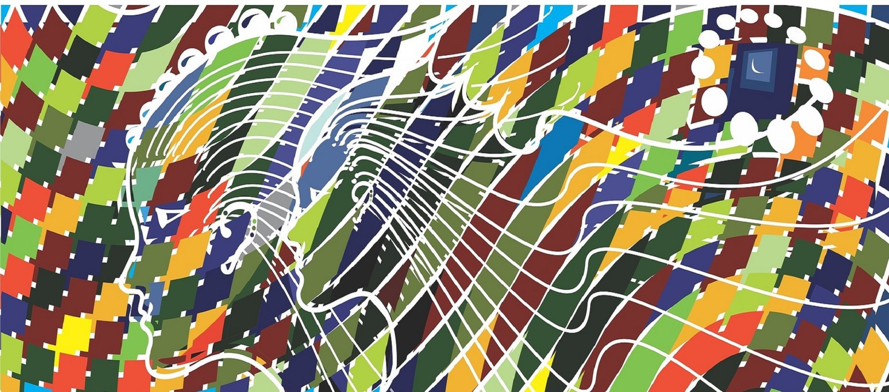

Objetivo General
Reconocer y evidenciar las características resilientes en las personas,
las cuales colocan a prueba sus capacidades en medio de las adversidades que se presentan, logrando alcanzar sus
propias metas y permitiendo el crecimiento personal.
Objetivos Específicos
Identificar casos de personas resilientes
Analizar los referentes teóricos e investigativos de la resiliencia
Evidenciar el interés y motivaciones que poseen las personas resilientes por demostrar sus fortalezas y habilidades más allá de sus limitaciones
Analizar las habilidades personales e interpersonales de las personas
Descubrir y potenciar las cualidades individuales
Fomentar la autonomía y la independencia